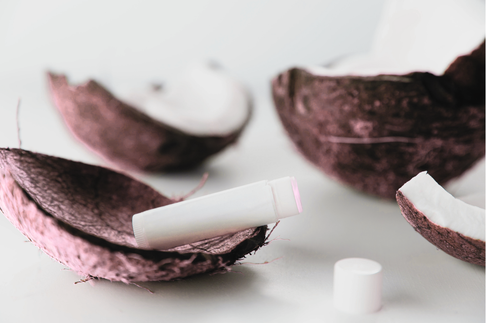

The story
inside a lip balm.
We’ve all been there: buying a lip balm, losing it in a week, and buying another. But where do those tiny tubes actually end up? The Balm Ethos follows an eco-friendly lip balm from the materials it begins with to the way it is made, transported, used and eventually disposed of.
Instead of another lecture about climate change, this is a closer look at the choices hidden inside an ordinary product—and how more thoughtful choices can shape its journey.

Five stages. One product.
Follow the lip balm from its first ingredients to the moment its packaging reaches the end of its useful life.
Sourcing Raw Materials
Where the ingredients begin and why sourcing matters.
↗ 02Manufacturing & Packaging
How ingredients become a finished balm.
↗ 03Distribution & Shipping
How the product travels toward the customer.
↗ 04Customer Usage
How everyday choices affect the product’s life.
↗ 05Disposal & Reuse
What can happen when the balm is finished.
↗The point isn’t perfection. It’s learning to notice what sits behind the things we use every day.